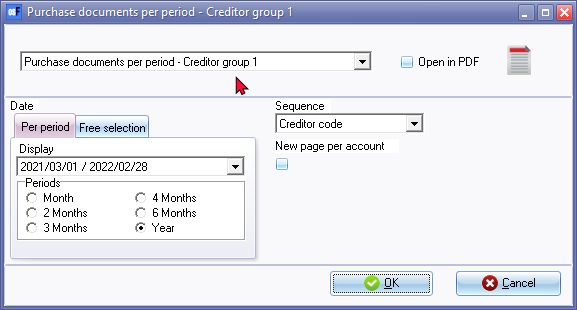
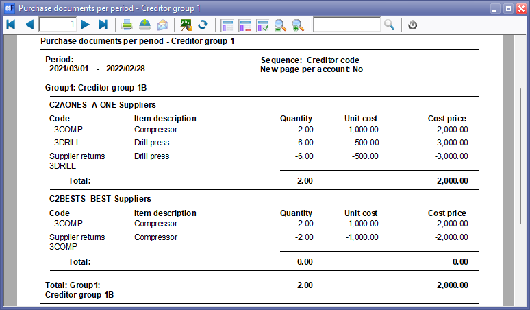
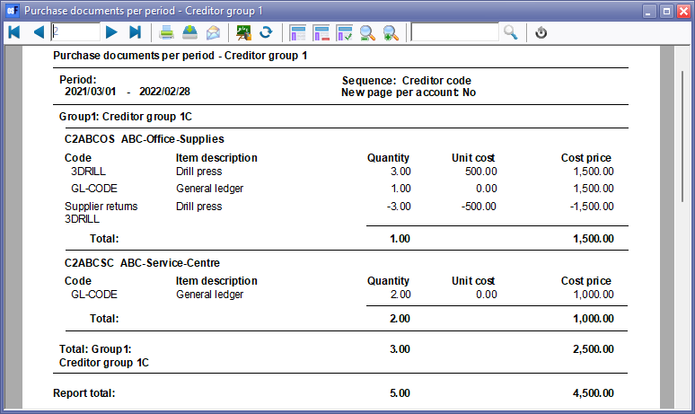

Purchases and Supplier returns per period (Reports menu)
The following five (5) reports are available to analyse posted purchase and supplier return documents:
- Purchase documents per period - Creditor group 1 - List the purchase and supplier return documents by creditor (supplier / vendor) reporting group 1 linked to creditor (supplier / vendor) accounts on Creditors (Default ribbon).
- Purchase documents per period - Creditor group 2 - List the purchase and supplier return documents by creditor (supplier / vendor) reporting group 2 linked to creditor (supplier / vendor) accounts on Creditors (Default ribbon).
- Purchase documents per period - Document group 1 - List the purchase and supplier return documents by document reporting group 1.
- Purchase documents per period - Document group 2 - List the purchase and supplier return documents by document reporting group 2.
- Purchase documents per period - Salesperson - List the purchase and supplier return documents by salesperson (person who processed the purchase document).
|
|
This report only includes purchase and supplier return documents which are posted. Unposted purchase and supplier return documents will be NOT be included in this report. To view a list of unposted documents, which is not updated to the ledger, go to Input → Checking unposted items (Default ribbon). |

Purchase documents by Reporting groups options
To print Purchase documents by Reporting groups reports:
- On the Reports ribbon, select Reports → Purchase analysis → Purchase and Supplier returns per period.

- Select the following:
- Report - Select the Purchase documents per period - Creditor group 1 (default), Purchase documents per period - Creditor group 2, Purchase documents per period - Document group 1, Purchase documents per period - Document group 2 or Purchase documents per period - Salesperson report.
- Period - Select the period on the Per period tab. You may click on the Free selection tab to select a specific date or a range of dates.
- Sequence - Select "Creditor code" to print the report by account code or "Description" to print the report by account description (name).
- New page per account - If this option is selected (ticked), it will print the transactions for each account on a new page.
|
|
The Company details will not be printed as in the Page header. The company name is displayed in the Page footer. |

- Click on the OK button.
Printed : Purchase documents by Reporting groups
An example of the "Purchase documents per period - Creditor group 1" report, is as follows:
Page 1 -

Each Reporting group will start on a new page.
Page 2 -
